File: 000180.gt.txt (if the image is defective, simply delete all Arabic text and the line will be excluded)
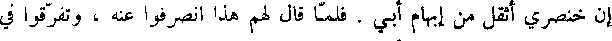
إن خنصري اثقل من إبهام أبى . فلما قال لهم هذا انصرفوا عنه ، وتفرقوا في
File: 000181.gt.txt (if the image is defective, simply delete all Arabic text and the line will be excluded)
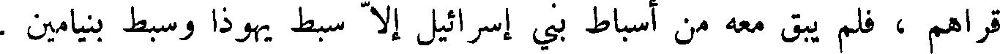
قراهم ، فلم يبق معه من أسباط بني إسرائيل إلا سبط يهوذا وسبط بنيامين .
File: 000182.gt.txt (if the image is defective, simply delete all Arabic text and the line will be excluded)
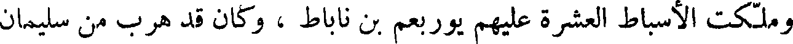
وملكت الأسباط العشرة عليهم يوربعم بن ناباط ، وكان قد هرب من سليمان
File: 000183.gt.txt (if the image is defective, simply delete all Arabic text and the line will be excluded)
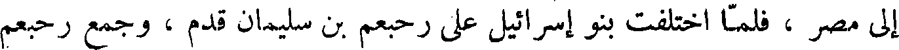
إلي مصر ، فلما اختلفت بنو إسرائيل على رحبعم بن سليمان قدم ، وجمع رحبعم
File: 000184.gt.txt (if the image is defective, simply delete all Arabic text and the line will be excluded)
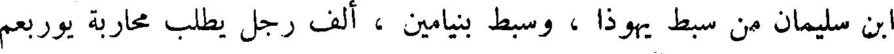
بن سليمان من سبط يهوذا ، وسبط بنيامين ، ألف رجل يطلب محاربة يوربعم
File: 000185.gt.txt (if the image is defective, simply delete all Arabic text and the line will be excluded)
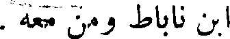
ابن ناباط ومن معه .
File: 000186.gt.txt (if the image is defective, simply delete all Arabic text and the line will be excluded)
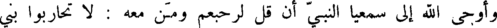
وأوحى الله إلى سمعيا النبي أن قل لرحبعم ومن معه : لا تحاربوا بني
File: 000187.gt.txt (if the image is defective, simply delete all Arabic text and the line will be excluded)
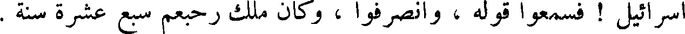
إسرائيل ! فسمعوا قوله ، وانصرفوا ، وكان ملك رحبعم سبع عشرة سنة .
File: 000188.gt.txt (if the image is defective, simply delete all Arabic text and the line will be excluded)
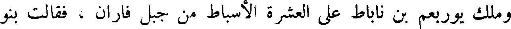
وملك يوربعم بن ناباط على العشرة الأسباط من جبل فاران ، فقالت بنو
File: 000189.gt.txt (if the image is defective, simply delete all Arabic text and the line will be excluded)
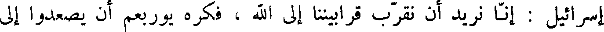
إسرائيل : إنا نريد أن نقرب قرابيننا إلي الله ، فكره يوربعم أن يصعدوا إلي
File: 000190.gt.txt (if the image is defective, simply delete all Arabic text and the line will be excluded)
بيت المقدس ، فسيتميلهم يلهم آل يهوذا ، فيدخلوا في ملكهم ، فقال : ليست
File: 000191.gt.txt (if the image is defective, simply delete all Arabic text and the line will be excluded)
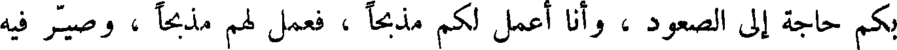
بكم حاجة ألي الصعود ، وأنا اعمل لكم مذبحا ، فعمل لهم مذبحا ، وصير فيه
File: 000192.gt.txt (if the image is defective, simply delete all Arabic text and the line will be excluded)
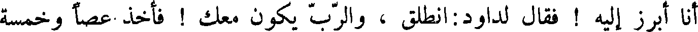
أنا ابرز إليه ! فقال لداود انطلق ، والرب يكون معك ! فأخذ عصا وخمسة
File: 000193.gt.txt (if the image is defective, simply delete all Arabic text and the line will be excluded)
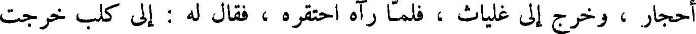
أحجار ، وخرج إلى غلياث ، فلما رآه احتقره ، فقال له : إلى كلب خرجت
File: 000194.gt.txt (if the image is defective, simply delete all Arabic text and the line will be excluded)
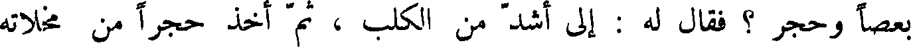
بعصا وحجر ؟ فقال له : إلى اشد من الكلب ، ثم اخذ حجرا من مخلاته
File: 000195.gt.txt (if the image is defective, simply delete all Arabic text and the line will be excluded)
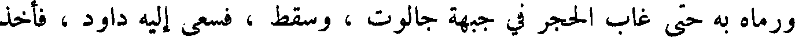
ورماه به حتى غاب الحجر في جبهة جالوت ، وسقط ، فسعى إليه داود ، فأخذ
File: 000196.gt.txt (if the image is defective, simply delete all Arabic text and the line will be excluded)
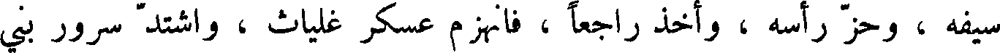
سيفه ، وحز رأسه ، واخذ راجعا ، فانهزم عسكر غلياث ، واشتد سرور بني
File: 000197.gt.txt (if the image is defective, simply delete all Arabic text and the line will be excluded)
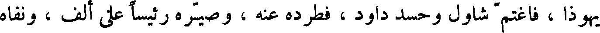
يهوذا ، فاغتم شاول وحسد داود ، فطرده عنه ، وصيره رئيسا على ألف ، ونفاه
File: 000198.gt.txt (if the image is defective, simply delete all Arabic text and the line will be excluded)
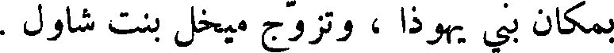
بمكان بني يهوذا ، وتزوج ميخل بنت شاول .
File: 000199.gt.txt (if the image is defective, simply delete all Arabic text and the line will be excluded)
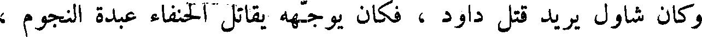
وكان شاول يريد قتل داود ، فكان يوجهه يقاتل الحنفاء عبدة النجوم ،
File: 000200.gt.txt (if the image is defective, simply delete all Arabic text and the line will be excluded)
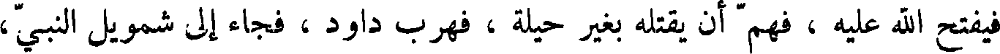
فيفتح الله عليه ، فهم أن يقتله بغير حيلة ، فهرب داود ، فجاء إلى شمويل النبي ،
File: 000201.gt.txt (if the image is defective, simply delete all Arabic text and the line will be excluded)
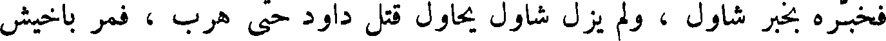
فخبره بخبر شاول ، ولم يزل شاول يحاول قتل داود حتى هرب ، فمر باخيش
File: 000202.gt.txt (if the image is defective, simply delete all Arabic text and the line will be excluded)
ملك جات ، فلما رآه عرفه ، فتحيل عليه داود حتى أطلقه ، فصار إلى سارع ، فنزلها.
File: 000203.gt.txt (if the image is defective, simply delete all Arabic text and the line will be excluded)
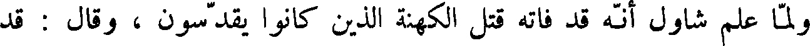
ولما علم شاول انه قد فاته قتل الكهنة الذين كانوا يقدسون ، وقال : قد
File: 000204.gt.txt (if the image is defective, simply delete all Arabic text and the line will be excluded)
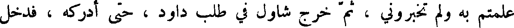
علمتم به ولم تخبروني ، ثم خرج شاول في طلب داود ، حتى أدركه ، فدخل
File: 000205.gt.txt (if the image is defective, simply delete all Arabic text and the line will be excluded)
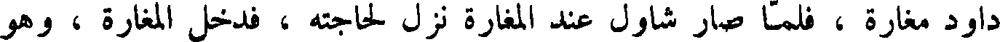
داود مغارة ، فلما صار شاول عند المغارة نزل لحاجته ، فدخل المغارة ، وهو
File: 000206.gt.txt (if the image is defective, simply delete all Arabic text and the line will be excluded)
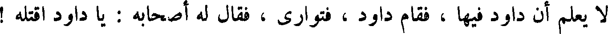
لا يعلم أن داود فيها ، فقام داود ، فتوارى ، فقال له أصحابه : يا داود اقتله !
File: 000207.gt.txt (if the image is defective, simply delete all Arabic text and the line will be excluded)
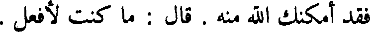
فقد أمكنك الله منه . قال : ما كنت لأفعل .
File: 000208.gt.txt (if the image is defective, simply delete all Arabic text and the line will be excluded)
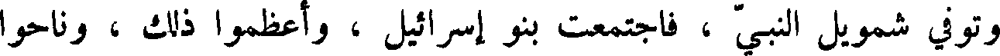
وتوفي شمويل النبي ، فاجتمعت بني إسرائيل ، واعظموا ذلك ، وناحوا
File: 000209.gt.txt (if the image is defective, simply delete all Arabic text and the line will be excluded)
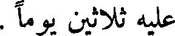
عليه ثلاثين يوما .
To Save: `Ctrl+s`, make sure to choose `Webpage, complete`!